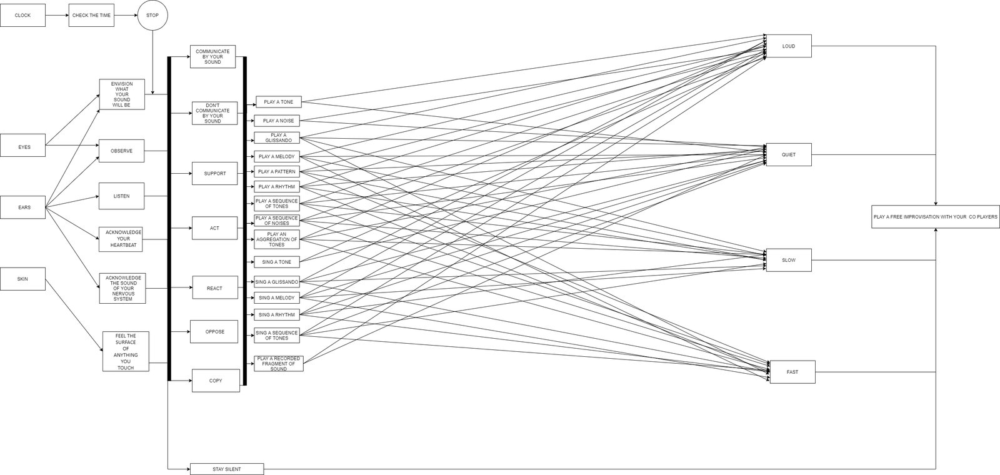

Brave New Sounds (TMM66 in the conflict for the river that only flows one way)
Adapted from a reactive robot architecture. The piece is not time-dependent: it runs as a continuous loop of listening, mapping, planning, deciding and playing. The ensemble agrees on a total duration and stops when that time is reached. The score documents possible behaviours rather than fixed notes.
Read the score